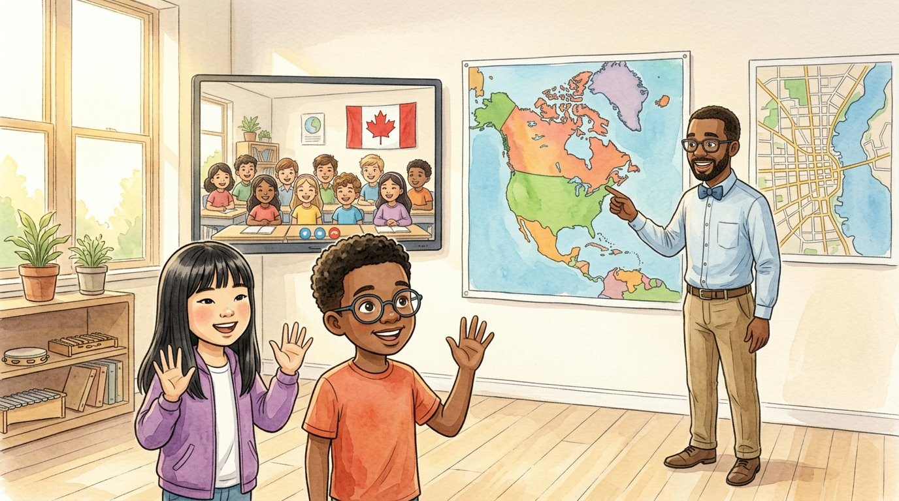

Grade 5 · Social studies · SS.5.G.1 · SS.5.CV.3
Two countries, two maps
A story about maps of different scales and about how the United States and Canada choose their leaders.
Dos países, dos mapas. Un cuento sobre mapas de distintas escalas y sobre cómo eligen a sus líderes Estados Unidos y Canadá.
Key words you will learn
Tap a green word to see what it means.
Toca una palabra verde para ver qué significa. Con la ayuda activada, verás también la definición en español.
The story
El cuento está en inglés. Pulsa «Listen to the story» para escucharlo y toca las palabras verdes cuando no entiendas una.
Mr. Okafor's class had a pen pal class in Windsor, Ontario, a Canadian city right across the river from Detroit. Today, they were having their first video call. Before it started, Mr. Okafor hung two maps on the wall.
One map showed all of North America. The other showed only the streets around their school. "Both are maps, but they have a different ," he said. "The big map shows a huge area with few details. The small map shows a small area with lots of details, like streets and parks."
"Which one do we use to find Windsor?" asked Sophia. "The North America map," said Daniel. He traced a line with his finger from Chicago, around Lake Michigan, to Detroit. "And here is the . Windsor is on the other side, in Canada."
The video call began, and the Canadian kids waved. A girl named Amira asked, "Who is your leader?" "The ," said Sophia. "We vote for the president every four years." "We have a ," said Amira. "But we don't vote for the prime minister directly."
"In Canada," explained their teacher, "people vote for members of . The leader of the party that wins the most seats usually becomes the prime minister. But here is the most important rule: to stay in power, the government must keep the of the House of Commons, the part of Parliament that people elect. That means most of its members must support the government, even when no party has more than half of the seats." Daniel frowned. "So the prime minister is part of the lawmakers?" "Yes. The prime minister also has a seat in Parliament."
"In the United States, the president and Congress are chosen in separate elections," said Mr. Okafor. "The president is not a member of Congress. That's part of the separation of powers." Amira's friend added, "And Canada also has a king. He is the head of state, but he doesn't make the decisions."
"Both countries are democracies," said Mr. Okafor. "In both, the people choose their lawmakers in free elections, and the government must follow a constitution." Then the kids compared other things. The United States has 50 states. Canada has ten and three territories.
After the call, Mr. Okafor showed an old map from 1816. The United States looked much smaller, and the West belonged to other countries. "Maps change when the world changes," he said. "Borders move, countries grow and new places get new names."
At the end of the day, Sophia drew a new map: a small-scale one, with Chicago and Windsor connected by a long, curvy line. "What's that line?" asked Daniel. "The friendship route," she said. "It doesn't have a border."
Pause to connect
Visual arts · VA:Cn11.1.5
Look at a map of the United States made by John Melish in 1816.
Observa un mapa de Estados Unidos hecho por John Melish en 1816.
See the map (Library of Congress) (opens in a new tab)
What you will see: The United States is colored, and it ends much farther east than today. Large areas in the West and the South are shown as British and Spanish possessions. Rivers and mountains are drawn by hand.
Lo que verás: Estados Unidos aparece coloreado y termina mucho más al este que hoy. Grandes áreas del Oeste y del Sur aparecen como posesiones británicas y españolas. Los ríos y las montañas están dibujados a mano.
- Name two things that are different from a map of the United States today.Nombra dos cosas que son diferentes de un mapa de Estados Unidos de hoy.
- A map is made by a person with a purpose. Why do you think it was important for people in 1816 to have a map like this one?Un mapa lo hace una persona con un propósito. ¿Por qué crees que era importante para la gente de 1816 tener un mapa como este?
Think about it, then answer in your notebook or talk it over with someone at home.
Check your thinking
Differences: the country is much smaller; places like Texas, California and Florida were not part of it; and there were fewer states. In 1816, people needed maps to travel, to trade and to plan where to settle. Maps also showed what the country wanted to become. A map, like art, shows a point of view.
Glossary
- scale
- How much smaller a map is than the real place. A small-scale map shows a big area; a large-scale map shows a small area in detail.
- escala: Cuánto más pequeño es un mapa que el lugar real. Un mapa de escala pequeña muestra un área grande; uno de escala grande muestra un área pequeña con detalle.
- border
- The line that divides two countries or states.
- frontera: La línea que divide dos países o estados.
- president
- In the U.S., the leader of the executive branch, elected by the people every four years.
- presidente: En EE. UU., el líder de la rama ejecutiva, elegido por el pueblo cada cuatro años.
- prime minister
- In Canada, the leader of the government, usually the leader of the party with the most members in Parliament. The prime minister's government must keep the support of the House of Commons.
- primer ministro: En Canadá, el jefe del gobierno, normalmente el líder del partido con más miembros en el Parlamento. Su gobierno debe conservar el apoyo de la Cámara de los Comunes.
- confidence
- In Canada, the support of most members of the House of Commons. A government needs it to stay in power.
- confianza: En Canadá, el apoyo de la mayoría de los miembros de la Cámara de los Comunes. Un gobierno la necesita para seguir gobernando.
- Parliament
- Canada's group of lawmakers, like Congress in the United States.
- Parlamento: El grupo de legisladores de Canadá, como el Congreso de Estados Unidos.
- province
- One of the main parts of Canada, like a state in the United States.
- provincia: Una de las partes principales de Canadá, como un estado en Estados Unidos.
Questions
Choose the correct answer. If you make a mistake, the story shows you where the answer is.
Elige la respuesta correcta. Si te equivocas, el cuento te muestra dónde está la respuesta.
-
Question A. What is the difference between the two maps on the wall?
¿Cuál es la diferencia entre los dos mapas de la pared?
They have different scales: one shows a huge area with few details, the other a small area with many details.
-
Question B. How does Canada usually choose its prime minister?
¿Cómo elige Canadá normalmente a su primer ministro?
People vote for members of Parliament, and the leader of the party with the most seats usually becomes prime minister. To stay in power, the government must keep the support of the House of Commons.
-
Question C. How are the U.S. president and Congress chosen?
¿Cómo se eligen el presidente y el Congreso de EE. UU.?
In the United States, the president and Congress are chosen in separate elections.
-
Question D. What do the U.S. and Canada have in common?
¿Qué tienen en común EE. UU. y Canadá?
In both countries, people choose their lawmakers in free elections, and the government follows a constitution.
-
Question E. What are the main parts of Canada?
¿Cuáles son las partes principales de Canadá?
Canada has ten provinces and three territories.
Challenge: explain your thinking
Compare and contrast
Make a Venn diagram comparing the governments of the United States and Canada. Write at least two differences and two things they have in common.
Compara y contrasta. Haz un diagrama de Venn que compare los gobiernos de Estados Unidos y Canadá. Escribe al menos dos diferencias y dos cosas que tienen en común.
Answer in your notebook or talk it over with a classmate. Use evidence from the story.
Responde en tu cuaderno o coméntalo con un compañero. Usa evidencia del cuento.
Check your thinking
Differences: the U.S. has a president elected separately from Congress; Canada has a prime minister who sits in Parliament and a king as head of state; the U.S. has 50 states, and Canada has ten provinces and three territories. In common: both are democracies, people choose their lawmakers in free elections, and both governments follow a constitution.
Think about fairness
How can people take part in decisions in each country, besides voting? What more information would you need to know if both systems give fair results for everyone?
Piensa en la justicia. Además de votar, ¿cómo puede participar la gente en las decisiones de cada país? ¿Qué información adicional necesitarías para saber si ambos sistemas dan resultados justos para todos?
Check your thinking
In both countries, people can contact their representatives, sign petitions, speak at community meetings, join groups and protest peacefully. To judge whether the results are fair, you could find out whether everyone can vote easily, whether all groups, including Native nations in the U.S. and First Nations, Inuit and Métis peoples in Canada, have a voice, whether the laws treat everyone equally and whether all communities get good schools, health care and clean water. A good answer says what information you would look for and why.